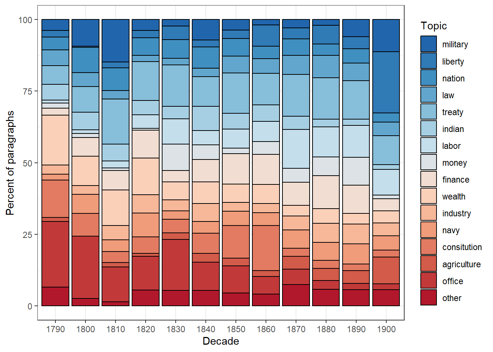

Section 7 Topic Modelling
Topic models refers to a suit of methods employed to uncover latent structures within a corpus of text. These models operate on the premise of identifying abstract topics that recur across documents. In essence, topic models sift through the textual data to discern recurring patterns of word co-occurrence, revealing underlying semantic themes (Busso et al. 2022; Blei, Ng, and Jordan 2003). This technique is particularly prevalent in text mining, where it serves to unveil hidden semantic structures in large volumes of textual data.
Conceptually, topics can be understood as clusters of co-occurring terms, indicative of shared semantic domains within the text. The underlying assumption is that if a document pertains to a specific topic, words related to that topic will exhibit higher frequency compared to documents addressing other subjects. For example, in documents discussing dogs, terms like dog and bone are likely to feature prominently, while in documents focusing on cats, cat and meow would be more prevalent. Meanwhile, ubiquitous terms such as the and is are expected to occur with similar frequency across diverse topics, serving as noise rather than indicative signals of topic specificity.
Various methods exist for determining topics within topic models. For instance, Gerlach, Peixoto, and Altmann (2018) and Hyland et al. (2021) advocate for an approach grounded in stochastic block models. However, most applications of topic models use Latent Dirichlet Allocation (LDA) (Blei, Ng, and Jordan 2003) or Structural Topic Modeling (Roberts, Stewart, and Tingley 2016).
LDA, in particular, emerges as a widely embraced technique for fitting topic models. It operates by treating each document as a blend of topics and each topic as a blend of words. Consequently, documents can exhibit content overlaps, akin to the fluidity observed in natural language usage, rather than being strictly segregated into distinct groups.
Gillings and Hardie (2022) state that topic modelling is based on the following key assumptions:
- The corpus comprises a substantial number of documents.
- A topic is delineated as a set of words with varying probabilities of occurrence across the documents.
- Each document exhibits diverse degrees of association with multiple topics.
- The collection is structured by underlying topics, which are finite in number, organizing the corpus.
Given the availability of vast amounts of textual data, topic models can help to organize and offer insights and assist in understanding large collections of unstructured text and they are widely used in natural language processing and computational text analytics. However, the use of topic modelling in discourse studies has received criticism (Brookes and McEnery 2019) due to the following issues:
Thematic Coherence: While topic modeling can group texts into topics, the degree of thematic coherence varies. Some topics may be thematically coherent, but others may lack cohesion or accuracy in capturing the underlying themes present in the texts.
Nuanced Perspective: Compared to more traditional approaches to discourse analysis, topic modeling often provides a less nuanced perspective on the data. The automatically generated topics may overlook subtle nuances and intricacies present in the texts, leading to a less accurate representation of the discourse.
Distance from Reality: Brookes and McEnery (2019) suggest that the insights derived from topic modeling may not fully capture the “reality” of the texts. The topics generated by the model may not accurately reflect the complex nature of the discourse, leading to potential misinterpretations or oversimplifications of the data.
Utility for Discourse Analysts: While topic modeling may offer a method for organizing and studying sizable data sets, Brookes and McEnery (2019) questions the utility for discourse analysts and suggests that traditional discourse analysis methods consistently provide a more nuanced and accurate perspective on the data compared to topic modeling approaches.
This criticism is certainly valid if topic modeling is solely reliant on a purely data-driven approach without human intervention. In this tutorial, we will demonstrate how to combine data-driven topic modeling with human-supervised seeded methods to arrive at more reliable and accurate topics.
7.1 Getting started with Topic Modelling
In this tutorial, we’ll explore a two-step approach to topic modeling. Initially, we’ll employ an unsupervised method to generate a preliminary topic model, uncovering inherent topics within the data. Subsequently, we’ll introduce a human-supervised, seeded model, informed by the outcomes of the initial data-driven approach. Following this (recommended) procedure, we’ll then delve into an alternative purely data-driven approach.
Our tutorial begins by gathering the necessary corpus data. We’ll be focusing on analyzing the State of the Union Addresses (SOTU) delivered by US presidents, with the aim of understanding how the addressed topics have evolved over time. Given the length of these addresses (amounting to 231 in total), it’s important to acknowledge that document length can influence topic modeling outcomes. In cases where texts are exceptionally short (like Twitter posts) or long (such as books), adjusting the document units for modeling purposes can be beneficial—either by combining or splitting them accordingly.
To tailor our approach to the SOTU speeches, we’ve chosen to model at the paragraph level instead of analyzing entire speeches at once. This allows for a more detailed analysis, potentially leading to clearer and more interpretable topics. We’ve provided a data set named sotu_paragraphs.rda, which contains the speeches segmented into paragraphs for easier analysis.
7.2 Human-in-the-loop Topic Modelling
In this human-in-the-loop approach to topic modelling which mainly uses and combines the quanteda package (Benoit et al. 2018), the topicmodels package (Grün and Hornik 2024, 2011), and the seededlda package (Watanabe and Xuan-Hieu 2024). Now that we have cleaned the data, we can perform the topic modelling. This consists of two steps:
First, we perform an unsupervised LDA. We do this to check what topics are in our corpus.
Then, we perform a supervised LDA (based on the results of the unsupervised LDA) to identify meaningful topics in our data. For the supervised LDA, we define so-called seed terms that help in generating coherent topics.
7.3 Loading and preparing data
When preparing the data for analysis, we employ several preprocessing steps to ensure its cleanliness and readiness for analysis. Initially, we load the data and then remove punctuation, symbols, and numerical characters. Additionally, we eliminate common stop words, such as the and and, which can introduce noise and hinder the topic modeling process. To standardize the text, we convert it to lowercase and, lastly, we apply stemming to reduce words to their base form.
txts <- base::readRDS(url("https://slcladal.github.io/data/sotu_paragraphs.rda", "rb"))
# inspect
str(txts)## 'data.frame': 8833 obs. of 6 variables:
## $ doc_id : int 1 2 3 4 5 6 7 8 9 10 ...
## $ speech_doc_id: int 1 1 1 1 1 1 1 1 1 1 ...
## $ speech_type : Factor w/ 1 level "State of the Union Address": 1 1 1 1 1 1 1 1 1 1 ...
## $ president : Factor w/ 23 levels "Abraham Lincoln",..: 7 7 7 7 7 7 7 7 7 7 ...
## $ date : chr "1790-01-08" "1790-01-08" "1790-01-08" "1790-01-08" ...
## $ text : chr "Fellow-Citizens of the Senate and House of Representatives:" "I embrace with great satisfaction the opportunity which now presents itself\nof congratulating you on the prese"| __truncated__ "In resuming your consultations for the general good you can not but derive\nencouragement from the reflection t"| __truncated__ "Among the many interesting objects which will engage your attention that of\nproviding for the common defense w"| __truncated__ ...# load data
txts <- base::readRDS(url("https://slcladal.github.io/data/sotu_paragraphs.rda", "rb"))
txts$text %>%
# tokenize
quanteda::tokens(remove_punct = TRUE, # remove punctuation
remove_symbols = TRUE, # remove symbols
remove_number = TRUE) %>% # remove numbers
# remove stop words
quanteda::tokens_select(pattern = stopwords("en"), selection = "remove") %>%
# stemming
quanteda::tokens_wordstem() %>%
# convert to document-frequency matrix
quanteda::dfm(tolower = T) -> ctxts
# add docvars
docvars(ctxts, "president") <- txts$president
docvars(ctxts, "date") <- txts$date
docvars(ctxts, "speechid") <- txts$speech_doc_id
docvars(ctxts, "docid") <- txts$doc_id
# clean data
ctxts <- dfm_subset(ctxts, ntoken(ctxts) > 0)
# inspect data
ctxts[1:5, 1:5]## Document-feature matrix of: 5 documents, 5 features (80.00% sparse) and 4 docvars.
## features
## docs fellow-citizen senat hous repres embrac
## text1 1 1 1 1 0
## text2 0 0 0 0 1
## text3 0 0 0 0 0
## text4 0 0 0 0 0
## text5 0 0 0 0 07.4 Initial unsupervised topic model
Now that we have loaded and prepared the data for analysis, we will follow a two-step approach.
First, we perform an unsupervised topic model using Latent Dirichlet Allocation (LDA) to identify the topics present in our data. This initial step helps us understand the broad themes and structure within the data set.
Then, based on the results of the unsupervised topic model, we conduct a supervised topic model using LDA to refine and identify more meaningful topics in our data.
This combined approach allows us to leverage both data-driven insights and expert supervision to enhance the accuracy and interpretability of the topics.
In the initial step that implements a unsupervised, data-driven topic model, we vary the number of topics the LDA algorithm looks for until we identify coherent topics in the data. We use the LDA function from the topicmodels package instead of the textmodel_lda function from the seededlda package because the former allows us to include a seed. Including a seed ensures that the results of this unsupervised topic model are reproducible, which is not the case if we do not seed the model, as each model will produce different results without setting a seed.
# generate model: change k to different numbers, e.g. 10 or 20 and look for consistencies in the keywords for the topics below.
topicmodels::LDA(ctxts, k = 15, control = list(seed = 1234)) -> ddldaNow that we have generated an initial data-driven model, the next step is to inspect it to evaluate its performance and understand the topics it has identified. To do this, we need to examine the terms associated with each detected topic. By analyzing these terms, we can gain insights into the themes represented by each topic and assess the coherence and relevance of the model’s output.
# define number of topics
ntopics = 15
# define number of terms
nterms = 10
# generate table
tidytext::tidy(ddlda, matrix = "beta") %>%
dplyr::group_by(topic) %>%
dplyr::slice_max(beta, n = nterms) %>%
dplyr::ungroup() %>%
dplyr::arrange(topic, -beta) %>%
dplyr::mutate(term = paste(term, " (", round(beta, 3), ")", sep = ""),
topic = paste("topic", topic),
topic = factor(topic, levels = c(paste("topic", 1:ntopics))),
top = rep(paste("top", 1:nterms), nrow(.)/nterms),
top = factor(top, levels = c(paste("top", 1:nterms)))) %>%
dplyr::select(-beta) %>%
tidyr::spread(topic, term) -> ddlda_top_terms
ddlda_top_terms## # A tibble: 10 × 16
## top `topic 1` `topic 2` `topic 3` `topic 4` `topic 5` `topic 6` `topic 7`
## <fct> <chr> <chr> <chr> <chr> <chr> <chr> <chr>
## 1 top 1 state (0.… countri … state (0… govern (… state (0… state (0… state (0…
## 2 top 2 countri (… upon (0.… unite (0… will (0.… countri … will (0.… upon (0.…
## 3 top 3 will (0.0… present … congress… year (0.… will (0.… unite (0… will (0.…
## 4 top 4 congress … war (0.0… may (0.0… unite (0… congress… govern (… congress…
## 5 top 5 nation (0… can (0.0… treati (… law (0.0… public (… power (0… may (0.0…
## 6 top 6 can (0.00… unite (0… citizen … may (0.0… year (0.… law (0.0… govern (…
## 7 top 7 subject (… nation (… nation (… upon (0.… nation (… peopl (0… citizen …
## 8 top 8 govern (0… author (… great (0… act (0.0… can (0.0… last (0.… nation (…
## 9 top 9 land (0.0… may (0.0… territor… public (… law (0.0… duti (0.… import (…
## 10 top 10 made (0.0… subject … made (0.… last (0.… import (… part (0.… great (0…
## # ℹ 8 more variables: `topic 8` <chr>, `topic 9` <chr>, `topic 10` <chr>,
## # `topic 11` <chr>, `topic 12` <chr>, `topic 13` <chr>, `topic 14` <chr>,
## # `topic 15` <chr>In a real analysis, we would re-run the unsupervised model multiple times, adjusting the number of topics that the Latent Dirichlet Allocation (LDA) algorithm “looks for.” For each iteration, we would inspect the key terms associated with the identified topics to check their thematic consistency. This evaluation helps us determine whether the results of the topic model make sense and accurately reflect the themes present in the data. By varying the number of topics and examining the corresponding key terms, we can identify the optimal number of topics that best represent the underlying themes in our data set. However, we will skip re-running the model here, as this is just a tutorial intended to showcase the process rather than a comprehensive analysis.
To obtain a comprehensive table of terms and their association strengths with topics (the beta values), follow the steps outlined below. This table can help verify if the data contains thematically distinct topics. Additionally, visualizations and statistical modeling can be employed to compare the distinctness of topics and determine the ideal number of topics. However, I strongly recommend not solely relying on statistical measures when identifying the optimal number of topics. In my experience, human intuition is still essential for evaluating topic coherence and consistency.
## # A tibble: 20 × 3
## topic term beta
## <int> <chr> <dbl>
## 1 1 fellow-citizen 0.000249
## 2 2 fellow-citizen 0.000351
## 3 3 fellow-citizen 0.000416
## 4 4 fellow-citizen 0.0000333
## 5 5 fellow-citizen 0.0000797
## 6 6 fellow-citizen 0.000183
## 7 7 fellow-citizen 0.000445
## 8 8 fellow-citizen 0.000306
## 9 9 fellow-citizen 0.000381
## 10 10 fellow-citizen 0.000332
## 11 11 fellow-citizen 0.000187
## 12 12 fellow-citizen 0.000147
## 13 13 fellow-citizen 0.000278
## 14 14 fellow-citizen 0.000336
## 15 15 fellow-citizen 0.000205
## 16 1 senat 0.000708
## 17 2 senat 0.000477
## 18 3 senat 0.00263
## 19 4 senat 0.00118
## 20 5 senat 0.000436The purpose of this initial step, in which we generate data-driven unsupervised topic models, is to identify the number of coherent topics present in the data and to determine the key terms associated with these topics. These key terms will then be used as seed terms in the next step: the supervised, seeded topic model. This approach ensures that the supervised model is grounded in the actual thematic structure of the data set, enhancing the accuracy and relevance of the identified topics.
7.5 Supervised, seeded topic model
To implement the supervised, seeded topic model, we start by creating a dictionary containing the seed terms we have identified in the first step.
To check terms (to see if ), you can use the following code chunk:
## # A tibble: 3 × 1
## term
## <chr>
## 1 agricultur
## 2 agriculturist
## 3 agricultural-colleg# semisupervised LDA
dict <- dictionary(list(military = c("armi", "war", "militari", "conflict"),
liberty = c("freedom", "liberti", "free"),
nation = c("nation", "countri", "citizen"),
law = c("law", "court", "prison"),
treaty = c("claim", "treati", "negoti"),
indian = c("indian", "tribe", "territori"),
labor = c("labor", "work", "condit"),
money = c("bank", "silver", "gold", "currenc", "money"),
finance = c("debt", "invest", "financ"),
wealth = c("prosper", "peac", "wealth"),
industry = c("produc", "industri", "manufactur"),
navy = c("navi", "ship", "vessel", "naval"),
consitution = c("constitut", "power", "state"),
agriculture = c("agricultur", "grow", "land"),
office = c("office", "serv", "duti")))
tmod_slda <- seededlda::textmodel_seededlda(ctxts,
dict,
residual = TRUE,
min_termfreq = 2)
# inspect
seededlda::terms(tmod_slda)## military liberty nation law treaty indian
## [1,] "war" "free" "countri" "law" "treati" "territori"
## [2,] "militari" "peopl" "nation" "court" "claim" "indian"
## [3,] "armi" "can" "citizen" "case" "govern" "tribe"
## [4,] "forc" "must" "govern" "person" "negoti" "mexico"
## [5,] "offic" "govern" "foreign" "upon" "unite" "part"
## [6,] "servic" "upon" "american" "offic" "minist" "will"
## [7,] "men" "liberti" "right" "provis" "two" "texa"
## [8,] "command" "everi" "time" "may" "relat" "new"
## [9,] "conflict" "public" "upon" "execut" "british" "line"
## [10,] "order" "will" "properti" "author" "britain" "within"
## labor money finance wealth industry navy
## [1,] "condit" "bank" "year" "peac" "produc" "vessel"
## [2,] "work" "money" "debt" "prosper" "industri" "navi"
## [3,] "labor" "gold" "amount" "will" "manufactur" "ship"
## [4,] "report" "currenc" "expenditur" "us" "import" "naval"
## [5,] "depart" "silver" "treasuri" "peopl" "product" "coast"
## [6,] "congress" "govern" "increas" "great" "foreign" "construct"
## [7,] "secretari" "treasuri" "last" "interest" "trade" "port"
## [8,] "servic" "note" "fiscal" "everi" "increas" "sea"
## [9,] "recommend" "issu" "estim" "may" "articl" "commerc"
## [10,] "attent" "public" "revenu" "happi" "upon" "great"
## consitution agriculture office other
## [1,] "state" "land" "duti" "congress"
## [2,] "power" "agricultur" "will" "act"
## [3,] "constitut" "public" "may" "last"
## [4,] "unite" "grow" "subject" "session"
## [5,] "govern" "larg" "can" "repres"
## [6,] "right" "improv" "congress" "presid"
## [7,] "union" "year" "consider" "senat"
## [8,] "shall" "now" "object" "hous"
## [9,] "act" "acr" "measur" "day"
## [10,] "one" "time" "shall" "author"Now, we extract files and create a data frame of topics and documents. This shows what topic is dominant in which file in tabular form.
# generate data frame
data.frame(tmod_slda$data$date, tmod_slda$data$president, seededlda::topics(tmod_slda)) %>%
dplyr::rename(Date = 1,
President = 2,
Topic = 3) %>%
dplyr::mutate(Date = stringr::str_remove_all(Date, "-.*"),
Date = stringr::str_replace_all(Date, ".$", "0")) %>%
dplyr::mutate_if(is.character, factor) -> topic_df
# inspect
head(topic_df)## Date President Topic
## text1 1790 George Washington other
## text2 1790 George Washington wealth
## text3 1790 George Washington office
## text4 1790 George Washington labor
## text5 1790 George Washington wealth
## text6 1790 George Washington officeUsing the table (or data frame) we have just created, we can visualize the use of topics over time.
topic_df %>%
dplyr::group_by(Date, Topic) %>%
dplyr::summarise(freq = n()) %>%
ggplot(aes(x = Date, y = freq, fill = Topic)) +
geom_bar(stat="identity", position="fill", color = "black") +
theme_bw() +
labs(x = "Decade") +
scale_fill_manual(values = rev(colorRampPalette(brewer.pal(8, "RdBu"))(ntopics+1))) +
scale_y_continuous(name ="Percent of paragraphs", labels = seq(0, 100, 25))## `summarise()` has grouped output by 'Date'. You can override using the
## `.groups` argument.
The figure illustrates the relative frequency of topics over time in the State of the Union (SOTU) texts. Notably, paragraphs discussing the topic of “office,” characterized by key terms such as office, serv, and duti, have become less prominent over time. This trend suggests a decreasing emphasis on this particular theme, as evidenced by the diminishing number of paragraphs dedicated to it.